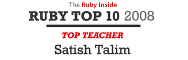

Ruby the Red Gem of Programming
This is an archived post This is an archived post
Previous
Index
Next
Ruby's Top Teacher in 2008 - Satish Talim
December 12 2008, 3:35 PM
by Victor Goff
Yay! Congrats, Boss!

Really proud of you. :-D
ashbb
10 views and 0 responses